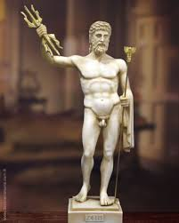
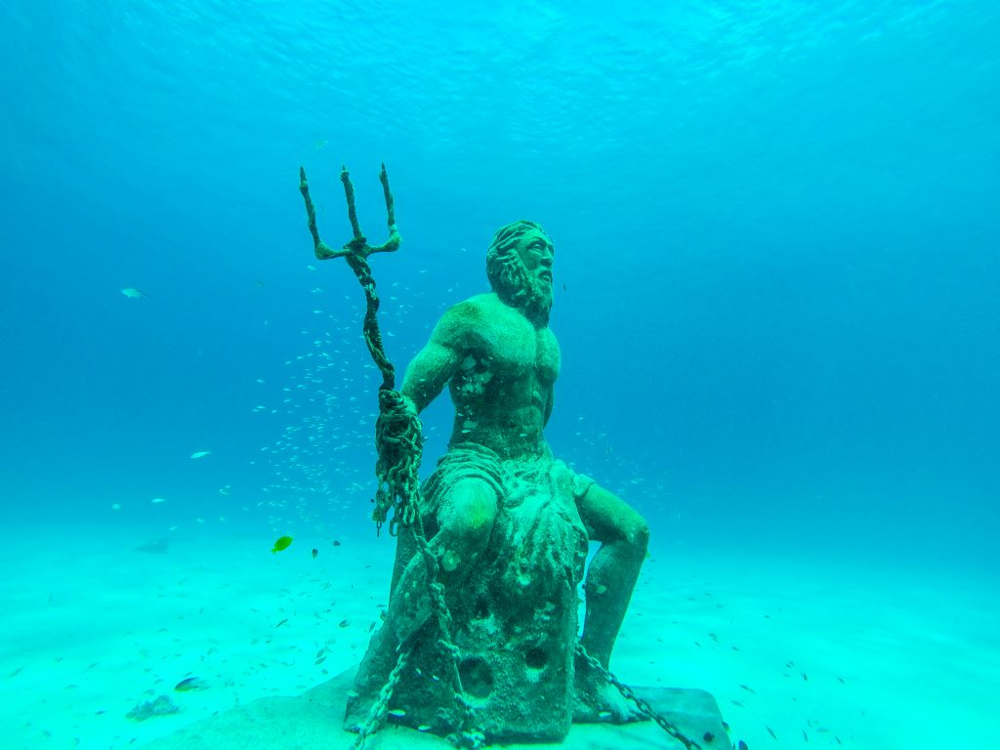
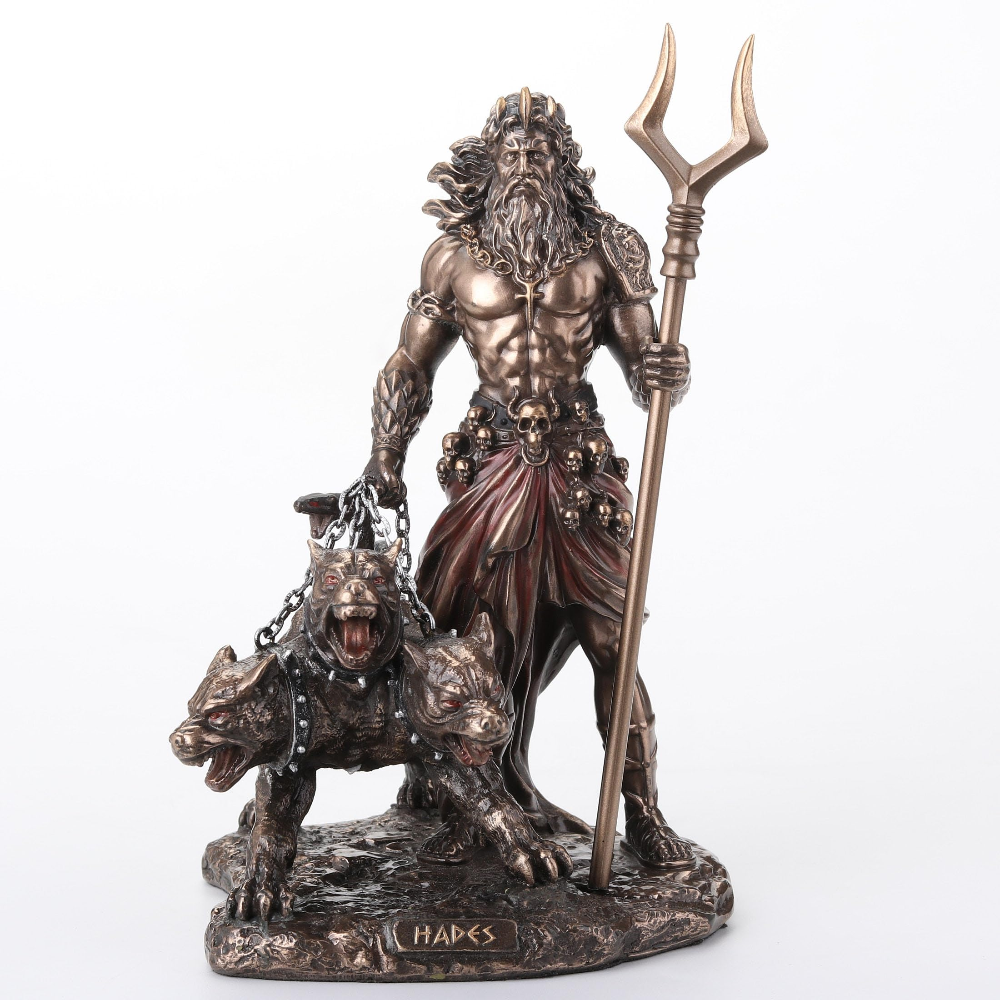

Zeus ist der Hauptgott der Griechen und sein Zorn ist überall gefürchtet. die Griechen erklärten sich mit ihm Gewitter also: Blitz Donner und Regen. Seine Frau ist Hera, die Göttin der Ehe. Hier ist ein Bild:
Proseidon ist der Bruder von Zeus. Er beherscht die Meere. Die Griechen machten ihn also für Fluten oder das kentern von Schiffen verantwortlich (und übrigens wenn ihr mal mehr über Proseidon und die anderen Götter in einem spannendem Buch erfahren wollt dann liest doch Pecy Jackson!!!). Auch ist er bekannt für seinen legendären Dreizack. Hier ist ein Bild
Hades Symbolisiert die finstere Unterwelt in der die Toten weilen. auch ist er bekannt für seinen dreiKöpfigen Hund Cerberus Hier ist ein Bild von ihm:
